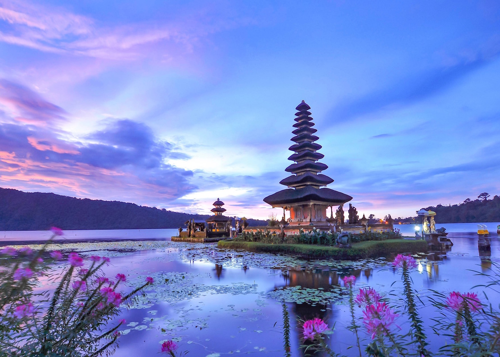
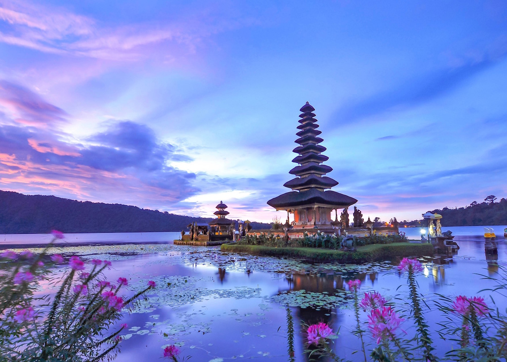

Discover Bali
Bali is a beautiful island, known for its stunning beaches, rich culture, and vibrant nightlife. Whether you're looking for adventure or relaxation, Bali has something for everyone.
 

Top Activities in Bali
- Surfing at Kuta beach
- Exploring Ubud's rice terraces
- Visiting the Tanah Lot temple
- Relaxing in a luxury spa
How to Plan Your Trip
- Book your flights to Bali.
- Reserve accommodation near the beach or in Ubud.
- Pack your bags with lightweight clothing and sunscreen.
Learn More About Bali
Here are some useful links to help you plan your Bali trip:
Contact Us
For more information, feel free to contact us via email.